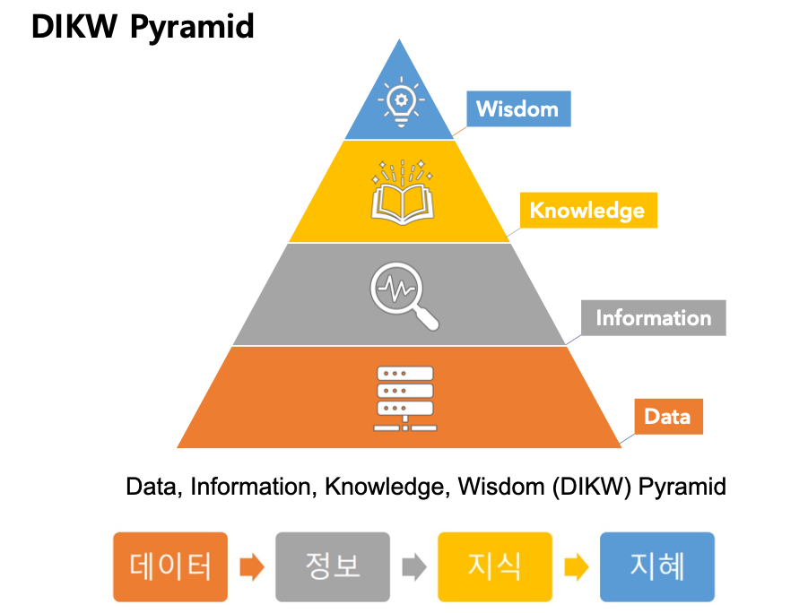
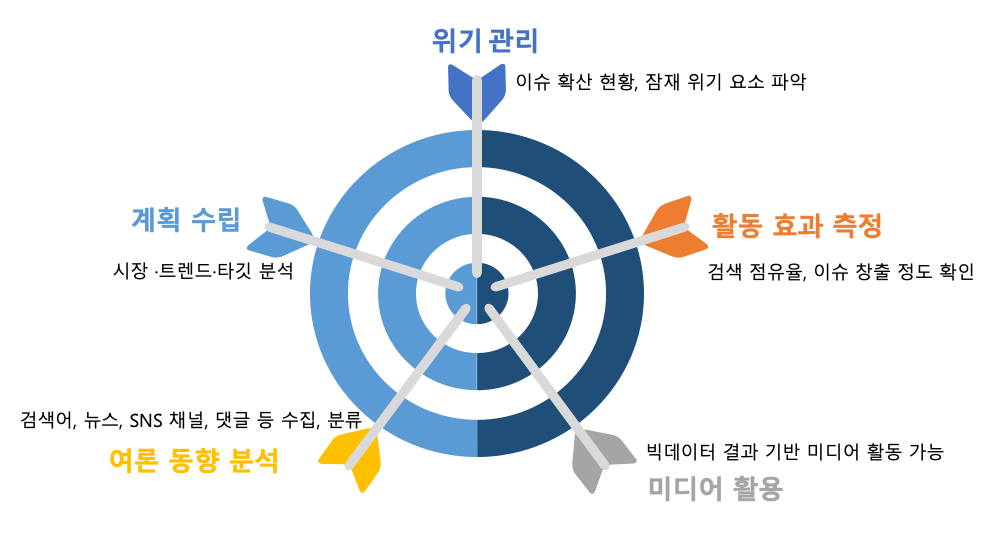

Big Data
현재는 빅 데이터 시대로 불립니다. 인터넷, 스마트폰, 센서 등 다양한 소스에서 매일 방대한 양의 데이터가 생성되고 있습니다. 이런 데이터를 효과적으로 분석하고 활용하기 위해서는 데이터 과학의 기법이 필수적입니다.

1분 동안 인터넷에서 만들어지는 데이터의 양
데이터 기반의 의사결정
기업, 정부, 병원, 연구기관 등 다양한 조직에서 의사 결정을 할 때 직관이나 경험에만 의존하기보다는 데이터를 기반으로 한 분석 결과에 의존하는 추세입니다. 데이터 과학은 이러한 정확하고 객관적인 의사 결정을 가능하게 합니다.
커스터마이징 서비스
데이터 과학을 통해 개인의 선호나 행동 패턴을 분석하면, 개인화된 서비스나 추천 시스템을 제공하는 것이 가능합니다. 예를 들어, 넷플릭스의 영화 추천, 아마존의 상품 추천 등이 여기에 해당합니다.
빅데이터 활용 예새로운 비즈니스 모델 발견
데이터를 분석함으로써 새로운 시장의 기회나 비즈니스 모델을 발견할 수 있습니다. 예를 들어, Uber나 Airbnb와 같은 기업들은 대규모 데이터 분석을 통해 전통적인 비즈니스에 혁신을 가져왔습니다.
복잡한 문제 해결
현대 사회의 많은 문제들은 복잡하고 다변적입니다. 데이터 과학은 이런 복잡한 문제들을 수학적, 통계적으로 분석하여 해결 방안을 도출할 수 있게 도와줍니다.
효율성 향상
제조업에서 물류, 의료 분야에 이르기까지 데이터 분석은 프로세스의 효율성을 높이는 데 크게 기여합니다. 예를 들어, 물류 분야에서는 최적의 물류 경로를 찾기 위해 데이터 분석을 활용합니다.
소셜 분석
소셜 미디어 분석은 트위터, 페이스북, 인스타그램, 유튜브와 같은 소셜 미디어 플랫폼에서 생성되는 대규모 데이터를 수집, 분석하여 그 안에서 의미 있는 정보와 인사이트를 추출하는 과정을 의미합니다. 이러한 분석은 브랜드, 제품, 서비스, 혹은 특정 이슈에 대한 공개적인 반응과 트렌드를 이해하는 데 중요한 역할을 합니다. 소셜 미디어 분석은 현대의 디지털 시대에서 중요한 의사결정 도구로 자리잡고 있습니다. 기업, 정부, NGO 등 다양한 조직은 소셜 미디어 분석을 통해 더 효과적이고 타겟에 맞는 전략을 세우며, 고객과의 소통을 강화하고 있습니다. 소셜 미디어 데이터 수집을 통해 감정분석, 트렌드 파악, 목표 고객 인사이트, 콘텐츠 최적화, 경쟁 분석, 위기 관리 등의 작업을 진행합니다.
